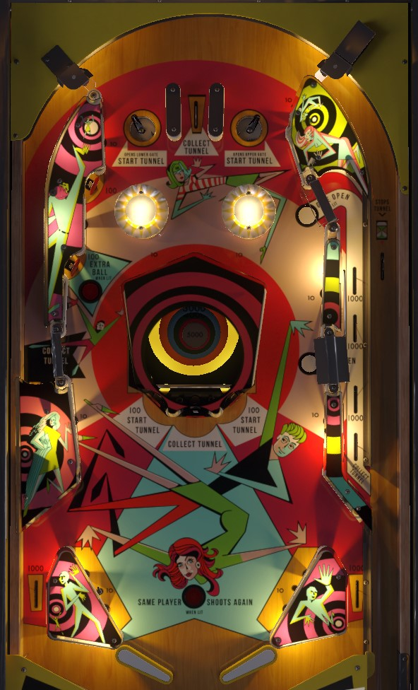

Time Tunnel is the original 4-player version, with only 70 copies produced. Space Time is a re-released 4-player version with an only mildly different table layout. Time Zone is a 2-player version that is otherwise identical to Space Time.
When the plunged ball activates the rollover switch in the shooter lane, the rotating Tunnel value will stop. Time your plunge so that the Tunnel stops on a high value, with the correct power such that the ball goes through the one and only top rollover lane to immediately collect the Tunnel value. On Space Time and Time Zone, the center standup target raises the center post between the flippers and scores the Tunnel value, so whack it repeatedly. On Time Tunnel, you can still do this, but the center target is much less safe with no post, so you can also opt to open right gates with the top saucers and attempt to use those gates for points and replunges.
The below picture is of Time Tunnel, which was taken from the VPX recreation by Bord. At the time of writing, Space Time and Time Zone do not have VPX versions. In Space Time and Time Zone, the Tunnel feature is set into the playfield, with 4 bumpers at the top instead of 2, and there is a center post between the flippers with two Down Post buttons near slingshots.
When it is running, the Tunnel rapidly clicks between values of 1,000, 2,000, 3,000, 4,000, and 5,000 points. Values are lit in increasing order, not randomly. The Tunnel is started at the beginning of each ball, by the top saucers, and by the left and right middle standup targets. The Tunnel is stopped by the rollover switch at the end of the shooter lane or whenever it is collected. The Tunnel is collected at the center top lane, the left kicker lane, the center standup target, or the right side lane.
To start, plunge such that the ball triggers the Stop Tunnel switch at a high value, and with the right power such that it lands in the center top lane to immediately collect that value. Ideally, the ball will come to the flippers for control without running into anything that restarts the tunnel. On Space Time and Time Zone, the center standup target scores the Tunnel value and raises the center post between the flippers, so it can be hit repeatedly at little risk. On Time Tunnel, the lack of a center post makes this repeated collect strategy much more dangerous.
The left gate is always open. This leads to a kicker lane that sends the ball back to the top of the table. The kicker lane scores the Tunnel value. Rarely, intermittently, and based on 10-point switch hits, the left kicker will also be lit to score an extra ball when used. This is rare and difficult enough to do that it should not be relied on.
The right lane has two gates: an upper gate near the bumpers, and a lower gate at the same height as the left kicker lane's gate. These gates start closed. The right top saucer opens the upper gate, and the left top saucer opens the lower gate. Top saucers always score 500 points. The right lane redirects the ball back to the shooter lane for a replunge. The upper gate scores 3,000 points plus the Tunnel value. The lower gate scores 1,000 points plus the Tunnel value. Using either gate closes both gates. Using the right lane as much as possible is one of the more consistent ways to score on Time Tunnel where the center standup target is much more dangerous.
On Time Tunnel, there are only 2 pop bumpers, and both bumpers are always lit for 100 points.
On Space Time and Time Zone, there are 4 pop bumpers: the upper left and lower right are blue, while the other two are red. Exactly one colour of bumpers is lit, and which colour it is alternates with every 10 point switch hit. Lit bumpers score 100 points while unlit bumpers score only 10.
There are no in lanes. Flippers back up directly to the slingshots. Slingshots score 10 points. Out lanes score 1,000 points. On Space Time and Time Zone, there is a center post that fully blocks off the gap between the flippers, which is raised by the center Collect Tunnel standup target and lowered by the rollover buttons near the slingshots. Time Tunnel does not have this post at all.
There is no end-of-ball bonus- the Tunnel value is never collected automatically.